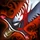

Crit


The classic crit build. Get botrk first for an early powerspike and transition into a crit-focussed ADC in the midgame with IE and RFC.
Situational Items

Buy this if you need more lifesteal. This is usually the case vs multiple tanks with long, drawn out teamfights.
Mallet provides you with a permanent slow that is most useful against opponents that have no direct way of getting on top of you, like most Juggernauts (e.g. Darius, Garen or Illaoi)